The Android build environment was being established and repeatedly debugged.
First stable build period — progressed through Version 1.2 and Version 1.4.
The Version 1.5 development state crashed and became unusable.
The working #18 state was restored and became the foundation for Version 1.5.
A major Android dependency and build-compatibility battle.
The pipeline stabilized and real Version 1.5 feature development resumed rapidly.
Advanced-mathematics dependencies were added and camera scanning was successfully introduced.
Continued roadmap development.
Screenshots

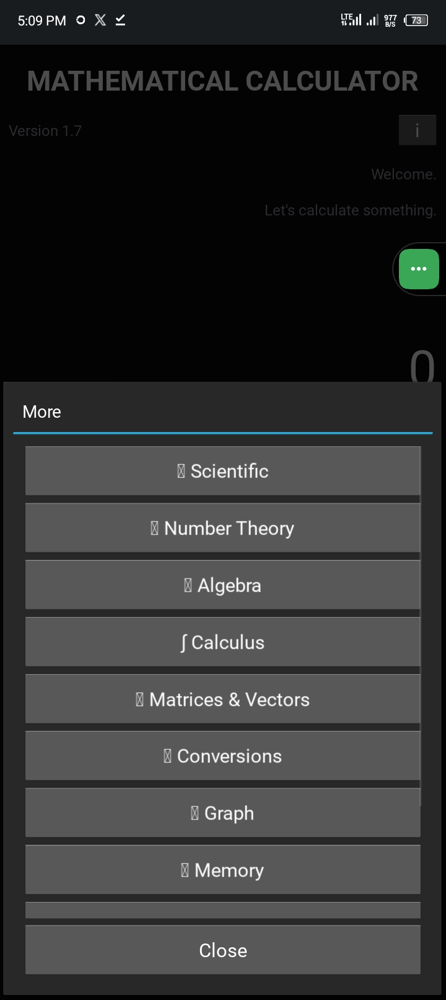
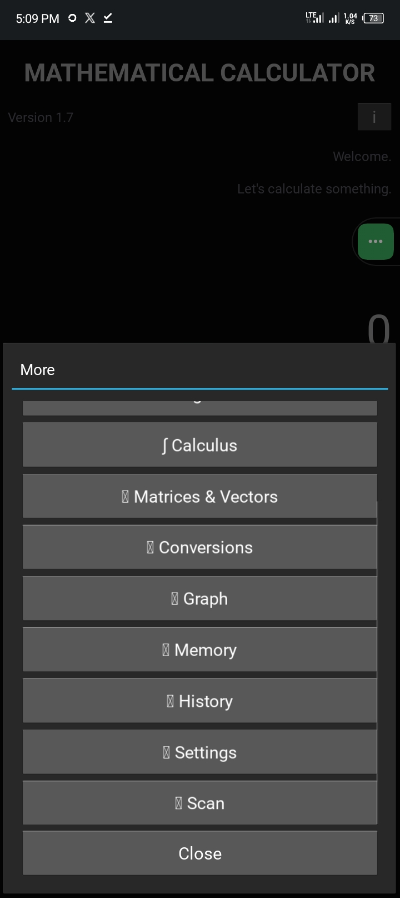
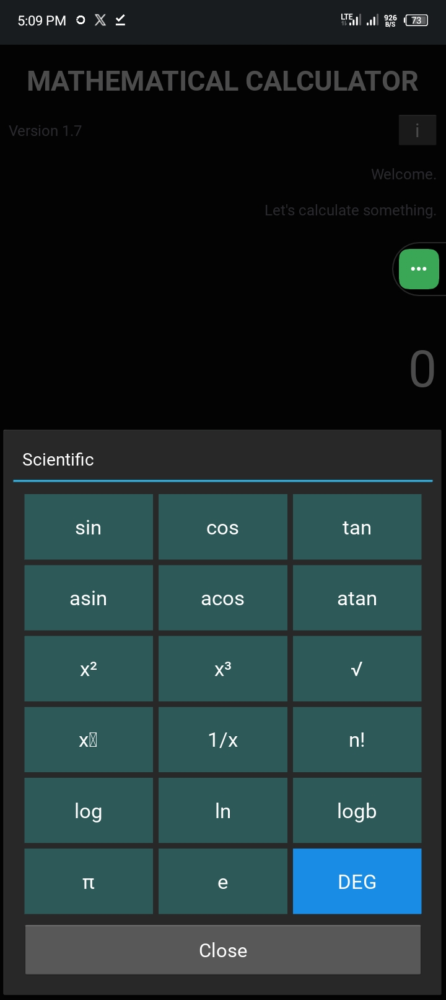
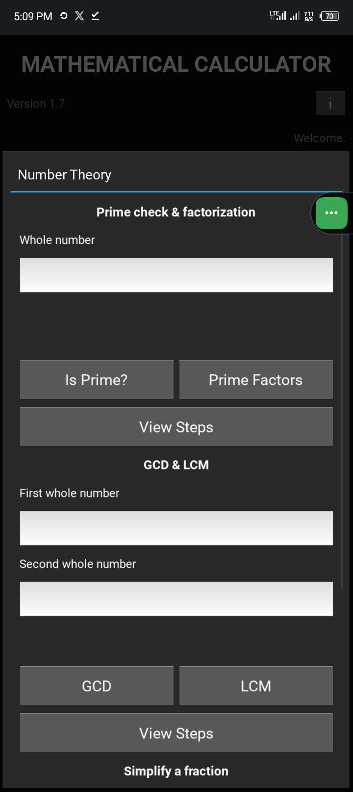
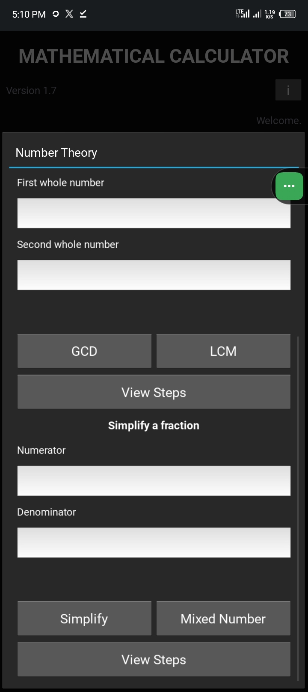
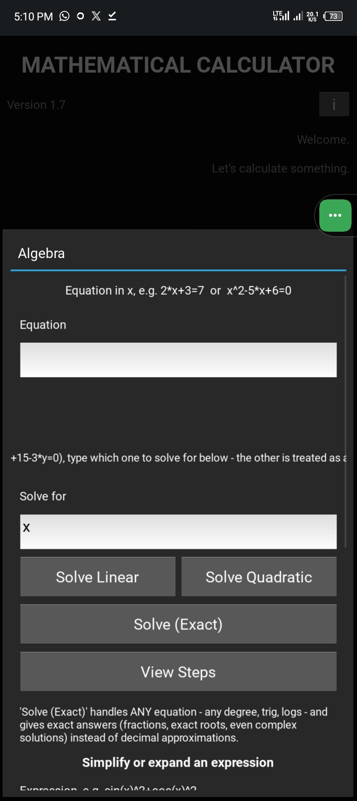
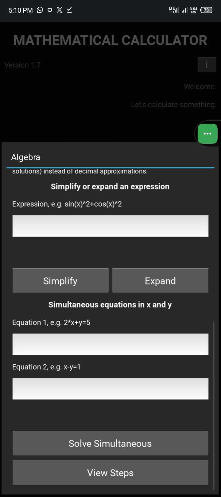
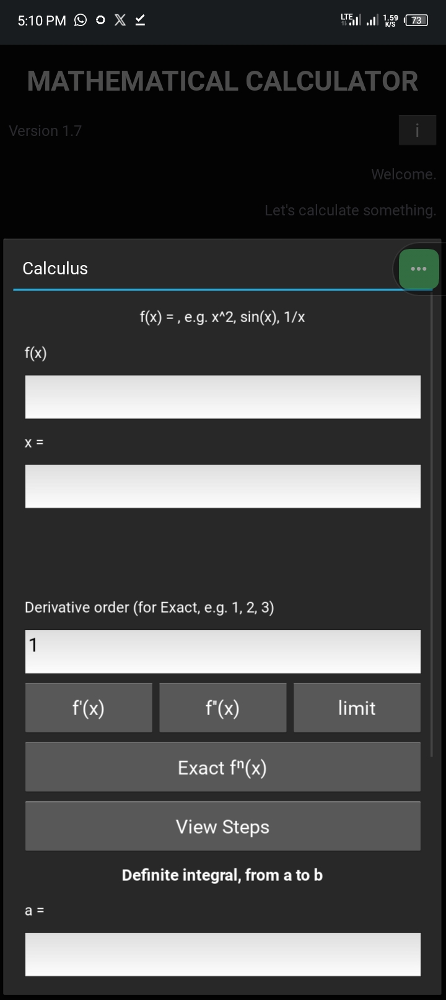
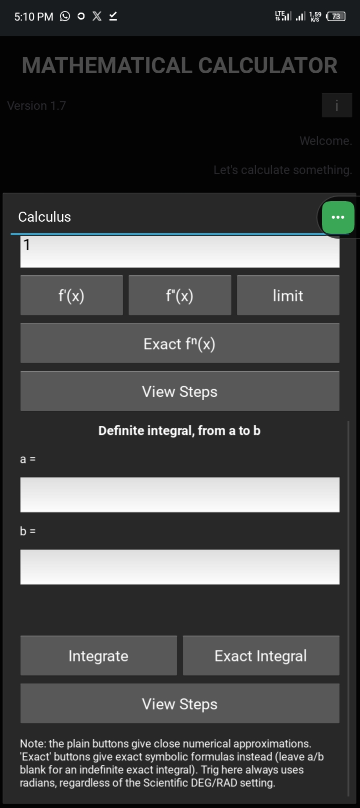
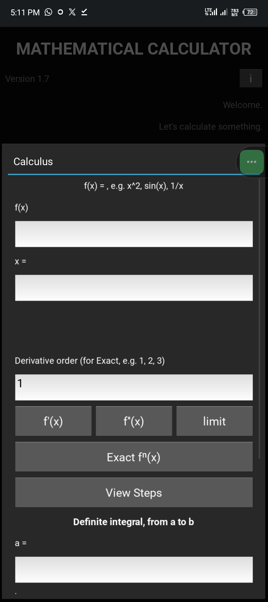
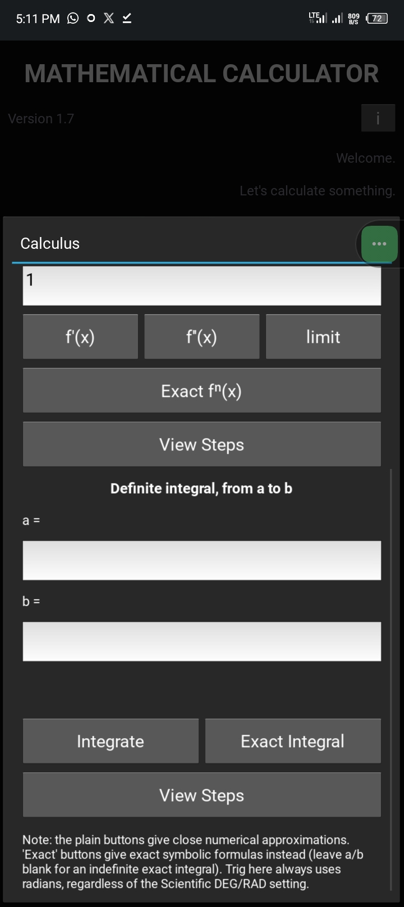
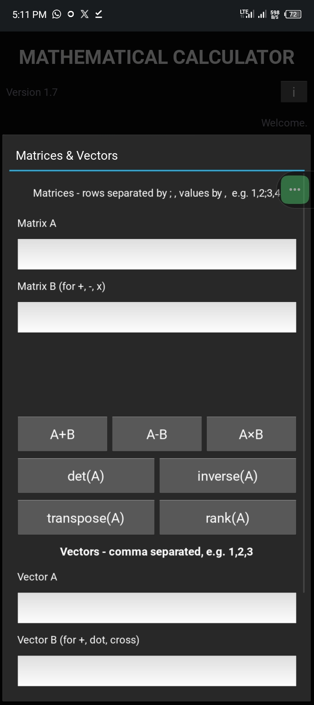
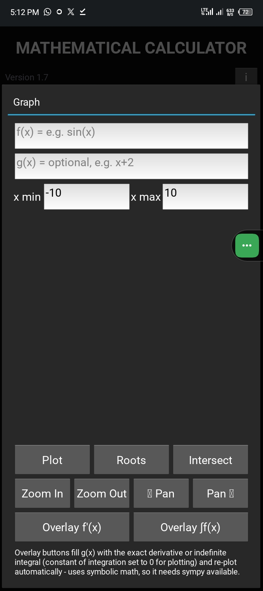
Downloads
What I Learned
Calmness. When things start feeling like they're going haywire, the move is always the same — stop, breathe, cancel everything, and restart with a clear head.